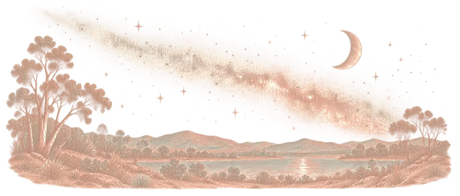
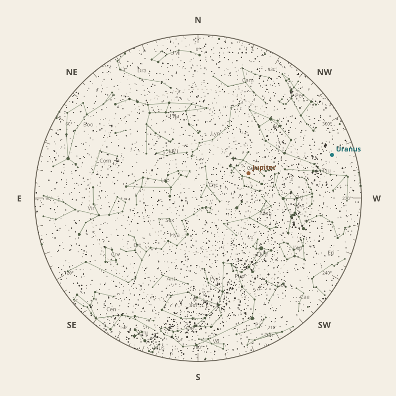
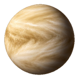
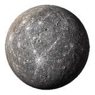

← Annual almanac

North is at the top; east is at the left. Solar System objects shown are above the horizon at 10 pm.
Monthly field almanac
March 2026

Galactic Centre viewing is best on 26 Mar 2026, from 2:09 am to 6:05 am, reaching 50°.
- New Moon
- 19 Mar Darkest skies
- Full Moon
- 4 Mar Brightest skies
- Best dark window
- 16 Mar 11h 13m
Current conditions
Checking the sky near Malabar Coast, India…
Sky chart: 15 Mar 2026, 10 pm
Malabar Coast, India local time.
Show static monthly chart

Night planner
Choose a date to see astronomical darkness, Moon interference, Galactic Centre visibility, and planet altitudes and times.
Best low-Moon dark periods this month
- 6:59 pm–6:12 am11h 13m · 18% Moon
- 6:59 pm–6:11 am11h 12m · 10% Moon
- 6:59 pm–6:10 am11h 12m · 5% Moon
March highlights
- Milky Way
Milky Way core window
3h 56m with 50° altitude.
- Planets
Uranus
Best monthly date at 67° altitude.
- Occultations
HIP 46149 lunar occultation
8:07 pm to 8:45 pm; Moon at 44° altitude for the first listed contact.
- Planetary events
Jupiter stationary point
Apparent motion changes direction.
- Milky Way
Milky Way core window
3h 57m with 50° altitude.

Moon phases
92%
84%
26%
13%
82%
Low illumination favours faint targets. Bright lunar targets are best near full Moon.
Download Moon phase CSV →
Galactic Centre sessions
- 2:08 am–6:07 am3h 59m · core to 50°
- 2:09 am–6:05 am3h 57m · core to 50°
- 2:11 am–6:06 am3h 56m · core to 50°

Planet visibility
Evening
- Jupiter31 Mar · 7:00 pm78° · Excellent
- Uranus1 Mar · 7:00 pm67° · Excellent
- Saturn1 Mar · 7:00 pm14° · Poor

Venus31 Mar · 7:00 pm14° · Poor- Neptune1 Mar · 7:00 pm13° · Poor
 Jupiter
Jupiter Uranus
Uranus Saturn
Saturn Neptune
NeptunePredawn

Mercury31 Mar · 6:00 am15° · Poor- Mars31 Mar · 6:00 am7° · Poor
 Mars
MarsEvents
- HIP 46149 lunar occultation8:07 pm to 8:45 pm; Moon at 44° altitude for the first listed contact.
- Jupiter stationary pointApparent motion changes direction.
- HIP 58093 lunar occultation10:16 pm to 11:32 pm; Moon at 40° altitude for the first listed contact.
Data and downloads
Positions are unavailable for 2 comet entries.
Occultation times use a smooth lunar limb; confirm grazing events with IOTA Occult 4.